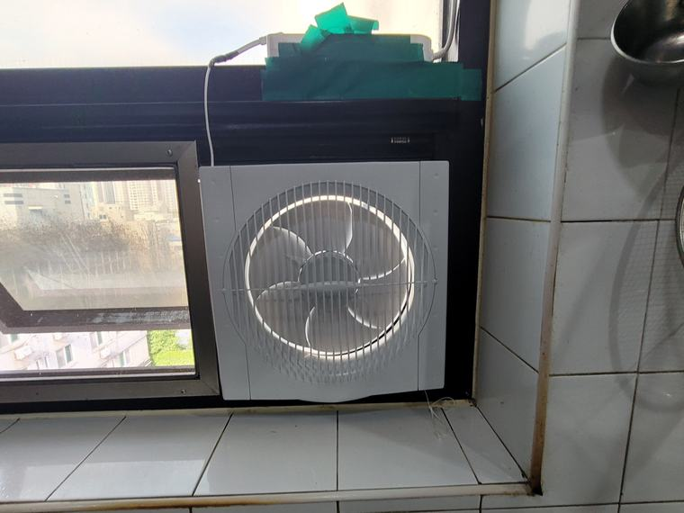

주방 창문형 환풍기 교체
본체보다 판이 먼저 낡습니다
창문형 환풍기를 교체할 때 본체만 바꾸면 되는 줄 아시는 경우가 많습니다. 실제로는 창틀에 끼워둔 판이 더 빨리 낡습니다. 판이 휘거나 틈이 벌어진 상태로 새 본체만 달면 외풍과 벌레 문제가 그대로 남습니다.
- 현장
- 주방 창문
- 시공 내용
- 고정판 재제작 · 본체 교체
- 소요 시간
- 반나절
- 중점 사항
- 틈 마감 · 무타공 유지
판이 낡으면 생기는 일
창문형 환풍기는 창틀에 판을 끼우고 그 판에 본체를 답니다. 판은 늘 바깥 공기에 닿아 있습니다. 햇빛과 온도 차, 습기를 계속 받으면서 몇 년이 지나면 미세하게 휘거나 수축합니다.
그러면 창틀과 판 사이에 틈이 생깁니다. 처음에는 눈에 안 보일 정도지만, 겨울에 그 자리에서 찬 바람이 들어오고, 여름에는 작은 벌레가 들어옵니다. 주방은 음식 냄새가 있어서 벌레가 특히 잘 모입니다.
이 현장도 본체 성능보다 판 상태가 문제였습니다. 그래서 본체를 교체하면서 판을 새로 재단했습니다.
시공 전 · 후
기존 판을 걷어내고 창틀 실측 후 새로 재단했습니다.


재단은 두 번 재고 한 번 자릅니다
창틀은 생각보다 반듯하지 않습니다. 오래된 건물일수록 상하 폭이 몇 밀리미터씩 다릅니다. 한 지점만 재고 자르면 반대쪽에 틈이 남습니다. 그래서 위·중간·아래를 각각 재고 가장 좁은 치수를 기준으로 자른 뒤 현장에서 다듬습니다.
판 두께도 중요합니다. 얇으면 본체 무게에 눌려 휘고, 두꺼우면 창이 안 닫힙니다. 창 구조와 본체 무게를 보고 두께를 고릅니다.
마감은 틈 없이 물리는 것이 목표입니다. 판과 창틀 사이는 물리적으로 꽉 물리게 하고, 남는 미세한 틈은 마감재로 채웠습니다. 이 마감이 부실하면 아무리 좋은 본체를 달아도 겨울에 춥습니다.
이 현장의 핵심
- 판 재제작 — 본체만 교체하지 않고 낡은 고정판을 새로 재단했습니다. 틈이 원인이었습니다.
- 세 지점 실측 — 창틀 폭이 위아래로 다릅니다. 가장 좁은 치수 기준으로 잡고 현장에서 다듬었습니다.
- 타공 없이 유지 — 기존과 동일하게 벽을 뚫지 않았습니다. 나중에 떼면 원래 창으로 돌아갑니다.
교체 시점을 판단하는 방법
창문형 환풍기 주변에 손을 대보시면 됩니다. 환풍기를 끈 상태에서 창틀 둘레를 따라 손을 훑을 때 찬 기운이 느껴지는 지점이 있으면 틈이 벌어진 것입니다.
본체 쪽은 소리로 판단합니다. 켤 때 덜컹거리거나, 돌아가는 소리에 규칙적인 잡음이 섞이면 베어링이나 고정부 문제입니다. 배출량이 줄었는데 날개를 닦아도 그대로면 모터 쪽입니다.
판과 본체를 함께 보시는 편이 좋습니다. 어차피 본체를 떼야 판을 확인할 수 있어서, 나눠 하면 같은 작업을 두 번 하게 됩니다.
자주 묻는 질문
본체만 바꾸면 안 되나요?
판 상태가 멀쩡하면 본체만 교체해도 됩니다. 다만 판이 휘거나 틈이 벌어져 있으면 외풍과 벌레 문제가 그대로 남습니다.
겨울에 창문형 쪽에서 찬 바람이 들어옵니다.
판과 창틀 사이 틈이 벌어진 상태입니다. 판을 다시 재단해 맞추면 대부분 해결됩니다.
비슷한 현장의 다른 사례
같은 분류에서 진행한 시공입니다. 현장 조건이 비슷하면 방식도 비슷하게 잡힙니다.